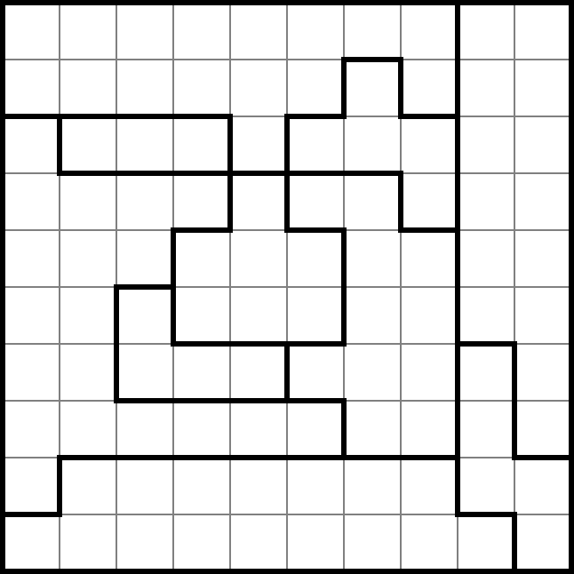
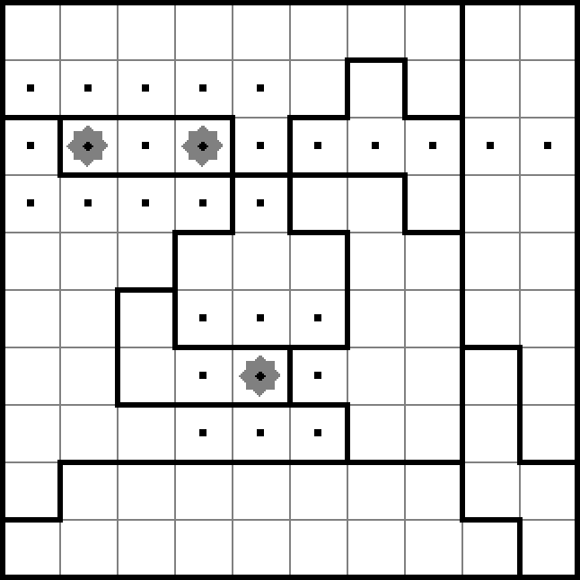
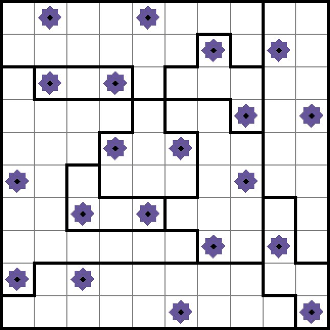

Project: ⭐️⚔️

A blank Star Battle puzzle.
You can try this puzzle online.

Partially solved. Dots indicate
cells that must be empty,
given the 3 stars placed so far.

In a Star Battle puzzle, a n×n grid is divided into n regions. To solve the puzzle, the player must find a placement of 2n stars such that each row, each column, and each region of the puzzle has exactly 2 stars, and no stars are vertically, horizontally, or diagonally adjacent. Other size variations are possible, but we’ll use 10×10 2-star puzzles for this project. We will also assume that valid puzzles have a single unique solution.
This logic puzzle was designed by Hans Eendebak in 2003. You can search the web for many more examples. Here is a site by Jim Bumgardner with tutorials, a web app, and pages and pages of Star Battle puzzle PDFs.
In this project, your group will construct a system that sends puzzles over the network and provides a graphical user interface for players to solve them.
The project will exercise many of the concepts you learned in class. You will implement a client/server architecture; you will use ParserLib to parse puzzles; and you will develop your own abstract data types to represent different aspects of the system.
Most importantly, you will practice working in a small group, using the software engineering techniques we have learned this semester. Almost all software engineering is done in teams, so in this project you will practice building a software system by collaborating, communicating effectively, and iterating on your teammates’ work.
On this project, you have significant design freedom to choose the interfaces, classes, and method signatures you use in your code.
Choose them wisely.
You will be expected to use specs, tests, abstraction functions, rep invariants, safety arguments, checkRep and other assertions.
The specification in this handout constrains what your solution must do, but you will have many design questions that are not answered in this handout. You are free to come up with your own answers to these questions – just be reasonable, consistent, safe from bugs, easy to understand, and ready for change. You can always ask your TA mentor or on Piazza for advice, but there is unlikely to be a single hard-and-fast answer.
On this project, Didit will run only your own tests. As always, correctness is your responsibility, and you must rely on your own careful specification, testing, and implementation to achieve it.
Before we start: team Git
Read and do the exercises in Git 3: Team Version Control.
Your team’s repository
One member of your team should ask Didit to create a remote
project/starbrepository, which will create a single repository shared by all members of your team.Then all team members will be able to go to Didit, follow the link to your team repo page, and find the
git clonecommand at top. Clone,cd,npm install, and open in VS Code.
Overview
During the project, class meetings will be replaced by team work time. Your team is expected to meet and work together during these times.
Working separately
For several pieces of the project, two team members will independently do that piece, resulting in two different designs in iteration #0. The third member of the group will then be responsible for iterating on those designs and taking the next step on that part of the project in iteration #1. These tasks will be described in detail below.
Checking in
Your team will be assigned a TA mentor who will help you with your design and help you stay on track as you implement it. You are required to check in with your TA during every team work time class. At this check-in, each team member should be prepared to:
- say what they have accomplished since the last check-in
- say what they plan to accomplish by the next check-in
- say what, if anything, is blocking their progress
- show that their own working copy of the project is committed, pushed, and up to date with the remote repo
Use the check-in to review how each person’s plans fit together and decide how to resolve blocking problems.
Working together
Other than reflections at the end of the project, all parts of the project should be committed to the repository you share. Each commit to the repository should have a useful commit message that describes what you changed.
Use the code review skills you’ve practiced on Caesar to review one another’s code during the project.
Caesar will not have your project code loaded into it, so you can decide how you plan to review, which might be with in-person discussion, over email, or by using pull requests on github.mit.edu.
The GitHub pull requests feature requires your team to use Git branches.
If you would like to try using branches and pull requests in a separate practice repo first, we have an optional group exercise on branches and pull requests for code review.
You are also strongly encouraged to try pair programming, where two people collaborate on a single computer, with one person watching over the other’s shoulder, or watching by videochat and screenshare. Pair programming is a skill that requires practice. Be patient: expect that pairing will mean you write code more slowly, because it’s like code review in real time, but the results are more correct, more clear, and more changeable. You can find plenty of advice on the Internet for how to structure your pairing.
Note that “pair programming” normally means just one keyboard, with one person driving (typing) and the other person in the backseat (code reviewing). So you are editing only one working copy, and committing the changes just once. When multiple people contribute to a commit, mention them in the commit message. Your TA will be reviewing the Git log to see individual contributions.
What we do in class with Constellation is a closer kind of collaboration than normal pair programming. Using Constellation during the project is possible but not encouraged, because it makes identical changes on two computers that require careful coordination to avoid merge conflicts. But if you really want to use Constellation, then before starting the collaboration, make sure both sides are in a clean state, with no uncommitted changes and fully in sync with the remote repo. After collaborating, both sides should commit the changes to their local repos, then push and pull until the commits are merged and both sides are again in a clean state. Note that you must be extremely disciplined to use Constellation and Git together successfully. Never walk away from a Constellation collaboration without cleaning up and getting merged.
High-level tasks
Team contract. Before you begin, write and agree to a team contract. This is due at the end of class on the day the project kicks off.
Understand the problem. Read the project specification on this page carefully.
Design. You will need to create abstract data types for various parts of your system, both client and server, and a grammar for parsing puzzles.
Your software design is perhaps the most important part of the project: a good design will make it simpler to implement and debug your system. Remember to write clear specifications for classes and methods; define abstraction functions and rep invariants, write
checkRep, and document safety from rep exposure.Iterate. Because of the short timeframe, the specification for how to iterate on this project is given to you by the staff. Design, test, and implement each piece, always working toward an end-to-end prototype. Then revisit your designs, improve the specifications, and test and implement more. And so on.
Test. You should write Mocha tests for the individual components of your system. Your test cases should be developed in a principled way, partitioning the spaces of inputs and outputs, and your testing strategy should be documented as we’ve been doing all along. Parts of your program may require manual testing, which is described below.
Implement. Write implementation code so that your tests pass. Iterate on the design and tests as needed to make the system work.
Reflection. Individually, you will write a brief commentary saying what you learned from this project experience, answering the reflection questions. Your reflection may not exceed 300 words, and should be submitted to the reflection form.
Testing
Didit will compile your project and run your tests every time you push.
The testing page describes how this works, and how to exclude tests from execution if they cannot run on Didit. You are not required to run any of your tests on Didit, but your project must compile and have a green build on Didit in order to be graded. If it doesn’t build on Didit, your TA won’t be able to build it either.
The testing page also provides suggestions for how to test canvas drawing based on your work in Problem Set 3, and how to test a web server in the context of Problem Set 4.
Manual testing
Don’t rely on manual testing to build a correct system.
However, if there are specifications you are not sure how to test automatically, you can document manual tests that cover parts of some partitions.
Document these tests in the relevant mocha test file immediately below the testing strategy.
For each manual test: give it a descriptive name, list the parts covered, and briefly but precisely describe each step a human tester should follow, along with assertions about expected results at each step.
For example, imagine you are testing the MIT web site:
/*
* Manual test: navigate to academic calendar
* Covers: page=home, type=static, type=redirect, data-source=registrar
* 1. browse to http://web.mit.edu => assert that header contains today's date
* 2. click "education"
* 3. click "academic calendar" => assert that page shows previous June through next June
*/Follow the same guidelines as for automated tests: test first, design a small set of tests, keep each test short, and make sure the tests are testing the spec.
Server vs. client
On Problem Set 4 we implemented a client/server system, but the staff provided both the web server (server.ts) and the web client (an HTML page and its included JavaScript).
On this project, you will write both.
Read the TypeScript in the web browser page to understand how your code is bundled into a JavaScript file that executes on the client (the player’s web browser), and how to avoid a common mistake where the client cannot be bundled because it imports from the Node.js standard library.
Provided code
It’s fine to use any code provided in this semester’s class. For example:
- Reading 12 example parser
- Reading 15 fetch examples
- Reading 18 Express examples
- Problem Set 3 starting code
- Problem Set 4 starting code, especially
WebServerinserver.ts
Your initial Git repo includes:
iter0directory- Each group member has a directory under
iter0for their work on iteration #0, since you may have files with the same names. Commit all iteration #0 work in those directories. After iteration #0, stop committing there and usesrc/andtest/as usual. starb-server.ts- This file should start your server. Running
npm run serverwill compile and run this file. starb-client.tsstarb-client.html- These files are your client user interface. Running
npm run watch-clientwill compile this TypeScript file and its dependencies, and automatically recompile whenever you edit the TypeScript. Openingstarb-client.htmlin your web browser will run the code. puzzlesdirectory- Contains example Star Battle puzzle files that your system must be able to use.
kd-1-1-1.starbis the puzzle shown at the top of this handout. example-page.tsexample-page.html- A starting point for your user interface.
Running
npm run watch-examplewill compile this TypeScript file, and openingexample-page.htmlin your web browser will run the code and show you what it does. README.md- Placeholder for project documentation. If you’re not sure your TA mentor will be able to find an iteration #0, iteration #1, or final project deliverable; or if there are instructions to run and use your project, document them here.
Since this assignment asks you to implement all the parsing, rendering, and game logic of our Star Battle puzzle system, remember that it is not appropriate to reuse any such components from an external source.
⭐️⚔️ Specification
Design, test, and implement a client/server Star Battle puzzle GUI.
Your system is only required to work for 10×10 2-star puzzles with unique solutions.
Until you have a complete working end-to-end implementation, your design freedom is limited. Items marked [for now] are requirements during iteration #0, iteration #1, and integration. Only once you have a complete working end-to-end system may you break these restrictions if it will improve your design, enable new features, etc.
Spec: Parser
Your system must be able to parse the provided example puzzles in the puzzles directory, which are plain text files with the .starb file extension.
These provided puzzles are “solved”: the file indicates the locations of the stars in each region.
[for now] The same grammar and parser must also handle “blank” puzzles sent from server to client, described below.
You must use ParserLib.
Other than what appears in the examples, what other puzzle file syntax you accept or reject is entirely up to you, and the format of blank puzzles is up to you.
Note that coordinates in the files are 1-indexed (row, col) from the top left of the puzzle.
Unlike Problem Set 3, puzzles are not recursive, so you should not expect a recursive parser or AST.
Spec: ADTs
Your system must use an immutable puzzle ADT that can represent valid unsolved, partially-solved, and fully-solved puzzles. Its design is otherwise up to you.
Your client web page must use another client ADT to manage its state (for example, what puzzle is being played, using the puzzle ADT) and operations (for example, in reaction to user input). Its design is entirely up to you.
Naturally, you may have other ADTs that are used by those types, or for other purposes.
[for now] You must use the same immutable puzzle ADT on both server and client. Only the client uses the client ADT.
Note that clients and servers do not have shared memory, so they do not share instances of the puzzle ADT (or instances of the parser in the previous section). But you must use the same ADT type (and same parser class) in both parts of the system.
Unlike Problem Set 3, it is not required that every puzzle ADT instance (which includes partially-solved puzzles) have a parseable string representation (the parser is only required to handle “blank” and “solved”).
Spec: Server
The server must accept HTTP requests on port 8789 for puzzles identified by their filename, without extension, in the subdirectory puzzles.
It must transmit “blank” puzzles to the client: instead of listing star locations separately, all locations in each region should be listed as empty.
[for now] The server must not maintain any player or game state.
Beyond sending blank puzzles, no other capabilities are required.
In particular, unlike Problem Set 4, the required spec does not include multi-player games. After fetching a puzzle, your client might be designed to proceed without ever contacting the server again.
Spec: Client
The client web page must: request a blank puzzle, display the puzzle on screen, allow the user to add stars anywhere on the grid, display those stars, allow the user to remove stars they have added, and inform the user if and when they have solved the puzzle.
On startup, any instructions needed by the user should be shown on the web page.
The client must support clicking on the puzzle to add stars.
[for now] The client may use only canvas drawing, and may not use any other HTML elements for drawing or interaction.
[for now] The client must request and play the single puzzle given by the
PUZZLEconstant at the top ofstarb-client.ts.The client may either determine that the puzzle is solved on its own, or it may request a determination from the server.
No other interactions or capabilities are required (for example, marking empty cells is not required, even if it makes solving more fun).
The particular graphical presentation is entirely up to you (for example, you could indicate regions with background colors instead of outlines, or draw smiley faces instead of stars).
Keep in mind that puzzle files have (row, col) coordinates, not (x, y) coordinates.
Spec: Extensions
This project is an opportunity to practice working together in a group, and an opportunity to demonstrate your ability to write code that is safe from bugs, easy to understand, and ready for change.
But if you have a working system that demonstrates those properties, we encourage you to extend it! Some features you might consider…
Requesting a list of available puzzles from the server and picking one to solve.
Awesome animation to celebrate a successfully-solved puzzle.
Asking for a hint, e.g. highlighting stars or cells the user should pay attention to.
…
Make sure you still satisfy the required spec, but you are permitted to break the [for now] requirements as long as you have already specified, tested, and implemented a complete end-to-end system.
reading exercises
As you start the project, which of these are correct reasons to parse textual puzzles into an ADT on the server?
Suppose you have completed your first end-to-end working version of the project.
Suppose you have a question about the project specification. Who/how should you ask first?
(missing explanation)
Dividing the work
Every team member must not only make a substantial contribution to the project, but every team member must make a concrete contribution to every major component of the project.
Contributions include writing specifications, writing testing strategy, writing tests, prototyping, writing internal docs, writing implementation code, fixing bugs, and giving code review feedback. Contributions you work on as a pair or a whole team are great, as long as everyone is involved.
Because of the short timeframe for the project, the staff has specified a breakdown of tasks you must follow. The description in this section is in reverse chronological order because the assignment of tasks for iteration #1 determines who does what for iteration #0.
Last: integration, refactoring, continued iteration, extensions
As team members complete their iteration #1 tasks assigned below, everyone should work together to integrate them. When you have a complete working system, revise and refactor to make it as safe from bugs, easy to understand, and ready for change as you can.
If you find that more substantial redesign is needed, plan and execute another iteration on the project. Only if you have time, consider implementing some of the extensions suggested above or ideas of your own.
Iteration #1
Fill in names in the boxes below to plan the division of work on different modules of your system as described in the spec. Record your decisions in your team contract.
You are required to divide the work such that every team member makes several different kinds of contributions. Assign iteration #1 of these components, with two tasks per group member, such that no person is mentioned more than once in each row or column:
(That is: puzzle ADT, parser, and drawing must be divided among all three group members, and so on.)
| Puzzle ADT: | Parser: | Drawing: | |||
|---|---|---|---|---|---|
| Server: | Client ADT: | ||||
| Interaction: |
- Puzzle ADT
- the ADT(s) for representing puzzles on both the client and server
- Parser
- parser for puzzles read from a file and sent from server to client
- Server
- HTTP server for sending puzzles to clients
- Client ADT
- the ADT(s) for representing client state
- Drawing
- function(s) or type(s) for drawing puzzles
- Interaction
- function(s) or type(s) to drive client interaction with server and user, handling user input
This assignment is only for iteration #1 of these components. Subsequently, any and all group members might contribute to further iteration on the specs, tests, and implementation of these pieces.
In many cases, the delineations between these components will not be clear! It is your job as a team to decide which components will have which functionality (and therefore who will spec, test, and build the functionality in iteration #1) and then iterate on those decisions (refactoring in order to create a more SFB, ETU, RFC system).
First: iteration #0
Before iteration #1, for each of these pieces, both other group members will complete an iteration #0 in parallel:
(That is: both group members who are not the person assigned to puzzle ADT iteration #1 above must be assigned to puzzle ADT specs + t.s. iteration #0 below; and so on. Here “t.s.” means a testing strategy that partitions inputs/outputs.)
| Puzzle ADT specs + t.s.: | Grammar: | Drawing prototype: | |||
|---|---|---|---|---|---|
| Web API + t.s.: | Client ADT specs + t.s.: | ||||
| Integration t.s. + tests: | |||||
- Puzzle ADT specs + t.s.
- specs and testing strategy for puzzle ADT (no choosing tests or implementing)
- Grammar
- single grammar for “blank” and “solved” puzzles (no testing or implementation)
- Web API + t.s.
- specs for client/server communication and testing strategy (no puzzle grammar, choosing tests, or implementation)
- Client ADT specs + t.s.
- specs and testing strategy for client ADT (no choosing tests or implementing)
- Drawing prototype
- hard-coded drawing of different puzzle components (not using puzzle or client ADTs)
- Integration t.s. + tests
- plan for manual testing of entire client/server system (partitions and outline of manual test cases)
These iteration #0 tasks should be done independently, in parallel by both of the group members assigned to them, resulting in two different specs, testing strategies, pieces of code etc.
And they should be done quickly: after reading this handout carefully and understanding the project specs, spend no more than one hour on each iteration #0 task. The group member assigned to work on iteration #1 will… iterate!
It should come as no surprise that these tasks are almost entirely about specifications and testing. Even the drawing prototype is offering a visual specification of what your puzzles might look like, while also exploring some of the newer and less-familiar JavaScript APIs you will use on the project.
Each group member should commit their iteration #0 work in the directory under iter0 with their username: e.g. alyssap works in iter0/alyssap/.
After iteration #0, leave those files where they are, and use src/ and test/ for iteration #1 and beyond.
- For the drawing prototype: you can write the iter0 code by editing
example-page.ts, runningnpm run watch-example, and viewing inexample-page.html. But don’t commit there: copy and commit your work under your username directory initer0, so you don’t create conflicts. Ask your TA mentor if you need advice.
reading exercises
(missing explanation)
Deliverables and grading
Iteration #0 progress check-in
At the iteration #0 check-in, everyone should have completed at least two out of four of their iteration #0 tasks, with plans to finish any remaining tasks by the end of that day (Tue, Apr 28). Both iteration #0 tasks for a component must be done and committed to the project repo before the team member assigned to iteration #1 of that component starts their work.
Remember that none of these things are close to final yet! Spend no more than about one hour on each of these tasks, and let your teammates know when they can look at your work.
Iteration #1 progress check-ins
At the iteration #1 check-ins, everyone should have substantial progress on at least one (on Thu, Apr 30) and then both (on Tue, May 5) of their iteration #1 tasks, with plans to finish any remaining work by the end of the day. You should demonstrate as many individual or connected-together parts of the system as you have working.
You should have a first (or for items covered by iteration #0, second) draft of grammars, specs, automated & manual tests, data type definitions, rep invariants, abstraction functions, equalValue/toString, etc. defined where appropriate.
Remember once again that none of these things are final yet!
If you are having trouble, seek help early. Slack days (from the problem sets) do not apply to project deadlines.
Schedule
- Thu, Apr 23, 9:30-11am
- Initial check-in meeting with your TA mentor. Use this opportunity to ask questions about the project specification, tasks, or schedule.
- Thu, Apr 23, 11am
- (end of class)
- Your team contract must be committed to your group repository. It should clearly describe the assignment of tasks as outlined above, according to the requirements.
- Tue, Apr 28, 9:30-11am
- Iteration #0 completion check-in meeting. You should discuss progress, plans, and blockers on iteration #0 tasks. You should aim to be done with iteration #0 by 9pm.
- Thu, Apr 30, 9:30-11am
- Iteration #1 progress check-in meeting. You should discuss progress, plans, and blockers on iteration #1 tasks.
- Tue, May 5, 9:30-11am
- Iteration #1 completion check-in meeting. You should discuss progress, plans, and blockers on iteration #1 tasks. You should aim to be done with iteration #1 by 9pm.
- Thu, May 7, 9:30-11am
- Last check-in meeting with your TA mentor. You should aim to demonstrate your project working end-to-end, and discuss specific plans for any remaining work.
- Fri, May 8, 9pm
- Project deadline. Your specifications, tests, and implementation should be complete and committed to your group’s repository by this deadline.
- Fri, May 8, 9pm
- Reflection deadline. Individually, you should write a brief reflection and submit it using the reflection form. Your reflection should be at most 300 words of plain text.
Grades will be determined according to the following breakdown:
- Exercises above & in Git 3: ~ε%
- Team contract: ~5%
- Design: ~30%
- Implementation: ~35%
- Testing: ~25%
- Reflection: ~5%
Check-ins with your TA mentor are also graded as binary checkoffs, either passed or missed, based on whether all team members are prepared and participate in the meeting. Missing a check-in costs up to 5 points on the overall project grade. You will check in with your mentor in all five class times during the project.